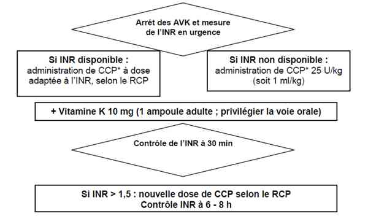
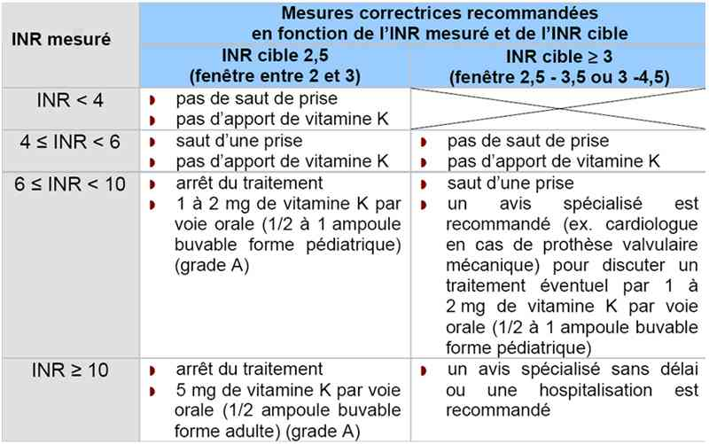
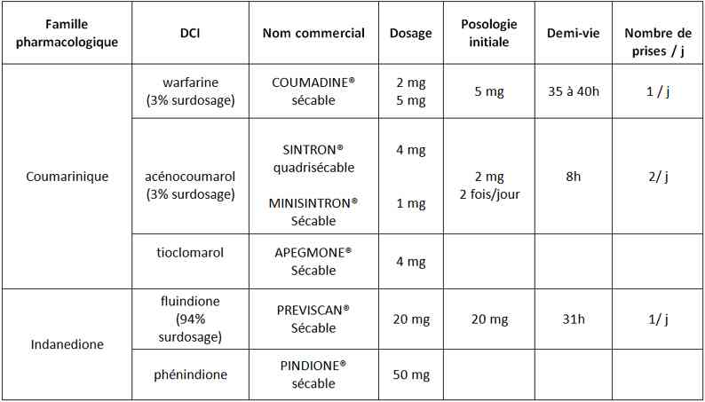
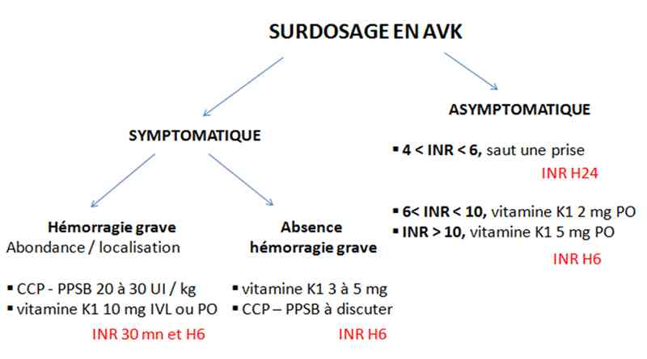

Bienvenue Sur Medical Education
Accident des anticoagulants
Spécialité : hematologie /
Points importants
-
Touche 1% de la population française sous AVK
-
Est au 1er rang des accidents iatrogènes
-
Première cause d'hospitalisation pour iatrogénie médicamenteuse soit 0,45% des hospitalisations (1/200)
-
La gravité du surdosage en AVK dépend de l'abondance du saignement, de sa localisation et du terrain sous-jacent (20% de décès chez les hospitalisés)
-
Antagoniste disponible = vitamine K
-
En cas d'hémorragie grave ou selon le risque hémorragique ou chirurgie : indication de CCP (Concentré de Complexe Prothrombinique)
Présentation clinique / CIMU
SIGNES FONCTIONNELS
Présentation clinique / CIMU
SIGNES FONCTIONNELS
Pas de signes spécifiques
Signes de saignement
-
Extériorisé :
- hématurie macroscopique
- otorragie
- gingivorragie
- épistaxis active / tarie
- hémorragie intraoculaire et rétro-orbitaire
- méléna / rectorragie, hématémèse
- hémoptysie
- méno / métrorragie
- hématome périphérique
- hémarthrose
-
Occulte :
- douleur thoracique (hémothorax)
- douleur abdominale lombaire (hémopéritoine) ou iliaque (hématome du psoas)
Conséquence du saignement
-
En faveur d'un saignement actif :
- palpitations, arythmie, malaise - lipothymie
- asthénie, dyspnée d'effort
-
En fonction du terrain / décompensation de pathologie sous-jacente :
- douleur thoracique angineuse (terrain coronarien)
- douleur abdominale intense, diffuse (terrain d'artériopathie mésentérique)
- douleur des membres inférieurs (terrain d'artériopathie oblitérante des membres inférieurs)
- majoration d'une dyspnée (insuffisance respiratoire chronique)
CONTEXTE
Terrain
- Pas de prédominance de sexe ou d'ethnie
- Age moyen 76 ans
Circonstance de survenue
- Insidieux ou brutal (saignement extériorisé)
-
Découverte fortuite :
- contrôle systématique
- au cours d'un événement aigu
Traitement
-
Au long cours / récent :
- AVK (indications - objectifs d'INR - chiffres récents d'INR)
- Récent
Facteurs déclenchants
- Erreurs
- Infection
- Insuffisance rénale
- Thyrotoxicose
- Poussée d'une maladie inflammatoire
- Interactions médicamenteuses
-
Interactions non médicamenteuses :
- phytothérapie
- cocktails multivitaminés
- abats, foie
- thé vert
- choucroute
- fenouil, avocat, choux, brocolis, laitue, carottes, épinard, tomates, navets, persil
EXAMEN CLINIQUE
Signes généraux - en faveur d'un saignement
- Massif = signes de gravité = choc hémorragique
-
Syndrome anémique aigu :
- sueurs
- sensation de soif
- polypnée
- confusion
- somnolence (hypoperfusion cérébrale)
-
Syndrome anémique sub-aigu / chronique :
- pâleur cutanéo-muqueuse
- souffle systolique fonctionnel
- cheveux secs
- ongles aplatis et cassants
- rhagades
- glossite atrophique
- dysphagie (Kelly Paterson)
- aggravation des troubles cutanés sur artériopathie oblitérante des membres inférieurs
-
Décompensation d'une pathologie sous-jacente :
- poussée d'insuffisance cardiaque gauche
- BDC irréguliers
- dyspnée aiguë sans anomalie auscultatoire (insuffisance respiratoire chronique)
-
Recherche de saignement :
-
extériorisé :
- hématurie macroscopique
- otorragie
- gingivorragie
- épistaxis active - tarie
- hémorragie intraoculaire et rétro-orbitaire
- méléna - rectorragie, hématémèse
- hémoptysie
- méno - métrorragie
- hématome périphérique
- hémarthrose
-
occulte :
- examen neurologique (conscience, signes de localisation, pupilles, signes d'HTIC)
- toucher rectal systématique (saignement digestif)
- recherche d'un psoïtis (hématome psoas)
- asymétrie auscultatoire avec matité (hémothorax)
- Bruits du coeur assourdis (hémopéricarde)
-
extériorisé :
En rapport avec l’anti-coagulation
- Signes cliniques de TVP
- Signes droits (embolie pulmonaire)
- Clic d'une valve mécanique
Signes étiologiques
- Point d'appel infectieux urinaire / digestif / pulmonaire / cutané
- Poussée de maladie inflammatoire
- Thyrotoxicose
EXAMENS PARACLINIQUES SIMPLES
Hémoglobine capillaire
En fonction du terrain et du tableau clinique
- Bandelette urinaire (recherche d'hématurie microscopique)
- ECG si douleur thoracique / malaise / palpitations (recherche de troubles de la repolarisation, du rythme, microvoltage)
- SpO2, FR si douleur thoracique
CIMU
-
Tri 1 si situation A = hémorragie grave ou potentiellement grave avec présence d'au moins un des critères suivants :
- hémorragie extériorisée non contrôlable par les moyens usuels
-
instabilité hémodynamique :
- PAS < 90 mmHg
- ou diminution de 40 mmHg par rapport à la PAS habituelle
- ou PAM < 65 mmHg
- ou tout signe de choc
- nécessité d'un geste hémostatique urgent = chirurgie, radiologie interventionnelle, endoscopie
- nécessité de transfusion de culots globulaires
-
localisation menaçant le pronostic vital ou fonctionnel :
- hémorragie intra-crânienne et intra-spinale
- hémorragie intra-oculaire et rétro-orbitaire
- hémothorax, hémo et rétropéritoine, hémopéricarde
- hématome musculaire profond et/ou syndrome de loge
- hémorragie digestive aiguë
- hémarthrose
- Tri 2 ou 3 si situation B = hémorragie symptomatique non grave
- Tri 4 si situation C = pas de saignement
Signes paracliniques
-
Situation A = hémorragie grave ou potentiellement grave
-
Situation B = hémorragie symptomatique non grave
-
Situation C = pas de saignement
BIOLOGIQUE
Situation A
- NFS (recherche anémie – normocytaire / microcytaire)
- TP- INR
- Ionogramme sanguin – urée - créatinine (estimation de la fonction rénale)
- Groupe sanguin 1ère, 2ème détermination - RAI (bilan pré-transfusionnel)
Situation B
- NFS (recherche anémie –normocytaire / microcytaire)
- TP- INR
- Ionogramme sanguin – urée - créatinine (estimation fonction rénale)
- A discuter selon terrain et tolérance, Groupe sanguin 1ère détermination – RAI (bilan pré-transfusionnel)
Situation C
-
NFS (recherche anémie – normocytaire / microcytaire)
-
TP- INR
- Ionogramme sanguin – urée - créatinine (estimation fonction rénale)
IMAGERIE
Situation A, en fonction des situations cliniques
- Radiographie pulmonaire face +/- profil (recherche hémothorax, cardiomégalie)
- TDM crâne - rachis sans injection (recherche saignement cérébro-méningé)
- TDM abdomino-pelvien avec injection (recherche hématome du psoas, hémopéritoine)
- Echographie cardiaque trans-thoracique (recherche hémopéricarde)
Situations B / C, en fonction des situations cliniques
- Pas d'urgence à réaliser des examens complémentaires à visée diagnostique
- Recherche d'un point d'appel infectieux = radiographie pulmonaire face +/- profil
Cas particulier du traumatisé crânien
- TDM cérébral sans injection immédiate si symptomatologie neurologique
- Délai rapide (4 à 6 heures), dans les autres cas
Diagnostic étiologique
-
Erreur dans le traitement
-
Infection
-
Thyrotoxicose
-
Poussée de maladie inflammatoire
Traitement
-
Situation A = hémorragie grave ou potentiellement grave
-
Situation B = hémorragie symptomatique non grave
-
Situation C = pas de saignement
TRAITEMENT PREHOSPITALIER / INTRAHOSPITALIER
Traitement
- Situation A = hémorragie grave ou potentiellement grave
- Situation B = hémorragie symptomatique non grave
- Situation C = pas de saignement
TRAITEMENT PREHOSPITALIER / INTRAHOSPITALIER
Gestes immédiats
- Maintenir une position appropriée en fonction de la localisation du saignement (assis, allongé, PLS, Trendelenburg)
- Gestes d'hémostase locale (compression, tamponnement)
- Gestes de confort (glaçage articulation)
Situation A
-
Stabilisation initiale :
-
maintien hémodynamique, au besoin en transfusant des culots globulaires :
- O négatifs en cas de choc hémorragique
- culots homologues si pas de signes de gravité clinique de mauvaise tolérance
- ± antalgiques de palier I ou II
- suspension des AVK
-
antidotes :
- les résultats d'INR ne doivent pas retarder la mise en route du traitement
- objectif : INR < 1,5; obtention en quelques minutes
- quel que soit l'INR de départ, vitamine K1 10 mg PO ou en IVL en 1 heure
-
CCP ou PPSB en unité de facteur IX :
- si INR contemporain de l’hémorragie non disponible, administrer une dose de 25 UI/kg équivalant facteur IX, soit 1mL/kg (si CCP 25U/mL facteur IX)
- si INR contemporain de l'hémorragie disponible, suivre les recommandations du résumé des caractéristiques du produit (RCP)
- pas d’indication à utilisation de plasma frais congelé (PFC) (grade B) ni de facteur VII activé recombinant (grade C)
-
maintien hémodynamique, au besoin en transfusant des culots globulaires :
-
Suivi du traitement :
-
au besoin (hémorragie massive / grave), poursuite des antidotes :
- vitamine K 10 mg PO ou IVL en 1 heure toutes les 12 heures
- CCP ou PPSB renouvelable après 30 min en fonction de l'INR
- si INR > 1,5, administration complémentaire de CCP en suivant le RCP
- procédures organisationnelles pluridisciplinaires (chirurgiens, radiologues, réanimateurs, endoscopistes) formalisées selon la spécificité locale et les tableaux cliniques (nécessité d'un geste hémostatique chirurgical, endoscopique ou endovasculaire)
-
au besoin (hémorragie massive / grave), poursuite des antidotes :
 _867 Algorithme Prise en charge d�??une hémorragie grave
Situations B
-
Stabilisation initiale :
- suspension des AVK et des interactions médicamenteuses
-
antidotes en fonction des résultats d'INR. Si 9 < INR < 20 :
- vitamine K1 PO 3-5 mg PO ou 1 à 1,5 mg en IVL en 1 heure
- prescription de CCP- PPSB selon RCP selon risque hémorragique et si indication chirurgicale secondaire
Situation C
-
Stabilisation initiale :
- suspension des AVK et interactions médicamenteuses
- Antidote = vitamine K1
 _866 Tableau Mesures correctrices en fonction de l�??INR
MEDICAMENTS
Situation A
-
PPSB en unité de facteur IX :
-
si INR contemporain de l’hémorragie non disponible :
- une dose de 25 UI/kg équivalant facteur IX, soit 1mL/kg (si CCP 25U/mL de facteur IX)
- bolus sur 3 min (vitesse d'administration préconisée par le fabricant = 4mL/min)
- efficacité en 3 min; permet l'obtention d'un INR < 1,5
-
si INR contemporain de l'hémorragie disponible :
- suivre les recommandations du résumé des caractéristiques du produit (RCP)
- définition dose PPSB, 1 dose à administrer est définie selon : 1 UI/kg augmente immédiatement le TP de 1,5%
- calcul du nombre d’unités à administrer selon la formule :
-
si INR contemporain de l’hémorragie non disponible :
Poids (en kg) × (TP souhaité [en %] – TP initial [en %])
1,5
Situation B
-
PPSB en unité de facteur IX :
- suivre les recommandations du résumé des caractéristiques du produit (RCP)
- définition dose PPSB, 1 dose à administrer est définie selon : 1 UI/kg augmente immédiatement le TP de 1,5%
- calcul du nombre d’unités à administrer selon la formule :
Poids (en kg) × (TP souhaité [en %] – TP initial [en %])
1,5
Surveillance
-
Situation A = hémorragie grave ou potentiellement grave
-
Situation B = hémorragie symptomatique non grave
-
Situation C = pas de saignement
SITUATION A
- Situation A = hémorragie grave ou potentiellement grave
- Situation B = hémorragie symptomatique non grave
- Situation C = pas de saignement
Clinique
- Hémodynamique, FC
- Hémorragie
- Tolérance clinique selon la localisation de l'hémorragie / le terrain
Paraclinique
- INR de contrôle à 30 min (objectif : INR < 1,5)
- NFS - INR après 6 ou 8 heures puis quotidiennement
SITUATION B
Clinique
- PA, FC
- Saignement (aggravation = situation A)
Paraclinique
- INR à 6 heures
SITUATION C
Clinique
- PA, FC
Paraclinique
- INR à 6 heures
Devenir / orientation
-
Situation A = hémorragie grave ou potentiellement grave
-
Situation B = hémorragie symptomatique non grave
-
Situation C = pas de saignement
CRITERES D'ADMISSION
-
Situation A = en service soins continus adapté à la localisation du saignement
-
Situation B = en service salle médecine / chirurgie
-
Situation C = hospitalisation en salle si facteurs de risque hémorragique individuels (âge, ATCD hémorragique, comorbidité)
-
Cas particulier du traumatisé crânien = hospitalisation pour surveillance pendant au moins 24h
CRITERES DE SORTIE
Situation C = traitement ambulatoire si contexte médical et social favorable
-
Réintroduction des AVK après une hémorragie grave :
- si indication AVK maintenue (décision avec spécialiste référent) et hémorragie contrôlée, traitement par HNF ou HBPM à dose curative. En parralèle reprise des AVK
- Réintroduction de l'anticoagulation en milieu hospitalier sous surveillance clinique et biologique
-
Ordonnance 100% :
- INR à distance selon la demi-vie de l'AVK
- lecture par médecin traitant
- éviction éventuelle du médicament interagissant avec l'AVK
- Recommandations de sortie :
-
Règles de bon usage :
- carte AVK mise à jour (indication, cible et molécule)
- prise des AVK le soir
- pas d'automédication (liste des interactions médicamenteuses jointe)
- alimentation équilibrée (pas de carences ou d'excès)
- Prendre rendez- vous avec le médecin traitant pour les résultats de l'INR prescrit sur l'ordonnance de sortie
- Prévoir suivi à visée étiologique en fonction du type de saignement (échographie vésico-rénale, pelvienne...)
- Eléments de surveillance et d'alerte d'un éventuel saignement
- Signaler les AVK aux autres professionnels de santé (dentistes) surtout avant une chirurgie
 _868 Tableau Anticoagulants
-
Conseils à distance en cas de chirurgie ou acte invasif :
-
pas d’indication à interrompre les AVK dans zone thérapeutique usuelle (INR entre 2 et 3), en absence de surdosage, pour les situations suivantes :
- chirurgie cutanée
- chirurgie de la cataracte
- actes rhumatologies à faible risque hémorragique
- actes de chirurgie bucco-dentaire http/:www.societechirbuc.com
- certains actes d’endoscopie digestive www.sfed.org
-
autres cas, arrêt des AVK et antagonisation recommandée – relai pré et postopératoire par héparine à dose curative (HNF ou HBPM sous réserve de leur contre-indication) :
- J-5 d’une chirurgie, dernière prise AVK
- J-3, relai par héparine curatif
- J-1, ajustement en fonction INR, si > 1,5 prise de 5mg de vitamine K PO
- valeur 1,5 (1,2 en neurochirurgie) = seuil en dessous duquel pas de majoration des complications hémorragiques périopératoires
- injections sous-cutanées réalisables sans interruption
- injections intramusculaires = risque hémorragique donc déconseillées
-
pas d’indication à interrompre les AVK dans zone thérapeutique usuelle (INR entre 2 et 3), en absence de surdosage, pour les situations suivantes :
-
Consulter le médecin traitant en vue de contrôle supplémentaire si :
- maladie intercurrente
- troubles digestifs (vomissements, diarrhées)
- introduction ou retrait de médicament
- à chaque modification de posologie
- dans ces situations, contrôle INR tous les 3-4 jours
Mécanisme / description
-
La vitamine K a une action sur la synthèse hépatique des facteurs de coagulation (II, VII, IX et X) et sur les inhibiteurs de la coagulation (protéines C et S)
-
90% de la vitamine K absorbée sont liés à l'albumine et sont donc inactifs (d'où l'action prolongée des AVK)
-
Les AVK empêchent le mécanisme de réduction de la vitamine K
-
Le test biologique adapté à la surveillance biologique est la mesure du temps de Quick exprimé en INR
-
Le temps de Quick permet d'explorer les facteurs II, VII, X et non le IX
-
En dehors de tout traitement, l'INR d'un sujet normal est de 1
-
INR = [ TQ malade / TQ témoin ] ISI (ISI = Indice de Sensibilité International de la thromboplastine utilisée)
Algorithme
-
Algorithme : surdosage en AVK
Algorithme
- Algorithme : surdosage en AVK
 _869 Algorithme Algorithme : surdosage en AVK
Bibliographie
-
Prise en charge des surdosages en antivitamines K, des situations à risque hémorragique et des accidents hémorragiques chez les patients traités par antivitamines K en ville et en milieu hospitalier, Recommandations professionnelles - HAS Avril 2008
-
Samama C.M - Conduites pratiques en hémostase et thrombose, 3e édition 2008, Alinéa éditions
-
Antivitamines K (AVK) Information destinée au professionnel de santé AFSSAPS 2003
-
Bon usage des AVK et conduite à tenir devant un surdosage, CRMDM
Auteur(s) : Sabina FAJAL, Albéric GAYET